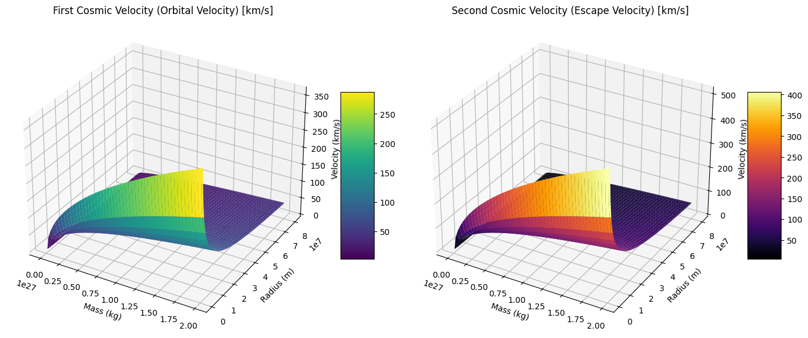

Problem 2
Escape Velocities and Cosmic Velocities
1. Introduction and Motivation
The concept of escape velocity is fundamental in astrophysics and space exploration. It determines the minimum speed needed for an object to break free from the gravitational pull of a celestial body without additional propulsion.
Building on escape velocity, the first, second, and third cosmic velocities represent important speed thresholds for different kinds of motion relative to planets and stars:
- First cosmic velocity: speed to maintain a stable circular orbit just above a planet’s surface.
- Second cosmic velocity (escape velocity): speed to leave a planet’s gravitational field.
- Third cosmic velocity: speed needed to escape the gravitational pull of the entire star system (e.g., the Sun’s gravity for Earth).
These velocities guide the design of satellites, interplanetary spacecraft, and concepts for interstellar travel.
2. Definitions and Physical Meaning
First Cosmic Velocity
- Also called orbital velocity at the surface.
- Minimum horizontal speed to orbit a planet in a circular path close to the surface.
where:
- \(G\) is gravitational constant,
- \(M\) is mass of the planet,
- \(R\) is radius of the planet.
Second Cosmic Velocity (Escape Velocity)
- Minimum speed to escape the gravitational field without further propulsion.
This velocity comes from conservation of energy, where kinetic energy equals gravitational potential energy.
Third Cosmic Velocity
- Speed to escape the gravitational field of the star system (e.g., escape Sun’s gravity from Earth’s orbit).
- For Earth escaping Sun’s gravity:
More precisely, the speed required at Earth's orbit to leave the Sun’s influence, where
- \(M_{\odot}\) = mass of the Sun,
- \(d\) = Earth-Sun distance,
- \(v_{\text{orbital}}\) = Earth’s orbital velocity around the Sun.
3. Mathematical Derivations
First Cosmic Velocity
From Newton's law for circular orbit:
Second Cosmic Velocity
Energy conservation between surface and infinity:
Third Cosmic Velocity
The third cosmic velocity combines escape velocity from Earth and Sun.
At Earth orbit radius \(d\):
Earth's orbital speed around Sun:
The spacecraft needs to overcome Sun's gravity from Earth's orbital velocity, thus:
But practically, third cosmic velocity is often approximated by:
4. Parameters Affecting Cosmic Velocities
- Mass \(M\) and radius \(R\) of celestial bodies influence first and second cosmic velocities.
- Distance \(d\) from star influences the third cosmic velocity.
- For gas giants like Jupiter with large \(M\) and \(R\), escape velocities are much higher.
- Atmospheres, rotation, and shape irregularities can modify these values in practice.
5. Calculations and Visualization for Earth, Mars, Jupiter
Physical constants and data
| Planet | Mass (kg) | Radius (m) | Surface Gravity (m/s²) |
|---|---|---|---|
| Earth | \(5.97 \times 10^{24}\) | \(6.371 \times 10^6\) | 9.81 |
| Mars | \(6.39 \times 10^{23}\) | \(3.39 \times 10^6\) | 3.71 |
| Jupiter | \(1.90 \times 10^{27}\) | \(6.99 \times 10^7\) | 24.79 |
- Sun’s mass \(M_{\odot} = 1.989 \times 10^{30}\) kg,
- Earth-Sun distance \(d = 1.496 \times 10^{11}\) m.
6. Python Implementation with 3D Plots
We'll plot the first and second cosmic velocities as a function of radius and mass, and illustrate third cosmic velocity at Earth's orbit.
import numpy as np
import matplotlib.pyplot as plt
from mpl_toolkits.mplot3d import Axes3D
# Gravitational constant
G = 6.67430e-11
# Define ranges for mass (kg) and radius (m) for hypothetical planets
mass_range = np.linspace(1e23, 2e27, 100) # 1e23 to 2e27 kg
radius_range = np.linspace(1e6, 8e7, 100) # 1e6 to 8e7 meters
Mass, Radius = np.meshgrid(mass_range, radius_range)
# First cosmic velocity
v1 = np.sqrt(G * Mass / Radius)
# Second cosmic velocity (escape velocity)
v2 = np.sqrt(2) * v1
# 3D Plot for First Cosmic Velocity
fig = plt.figure(figsize=(14, 6))
ax1 = fig.add_subplot(121, projection='3d')
surf1 = ax1.plot_surface(Mass, Radius, v1 / 1e3, cmap='viridis') # km/s
ax1.set_title('First Cosmic Velocity (Orbital Velocity) [km/s]')
ax1.set_xlabel('Mass (kg)')
ax1.set_ylabel('Radius (m)')
ax1.set_zlabel('Velocity (km/s)')
fig.colorbar(surf1, ax=ax1, shrink=0.5, aspect=5)
# 3D Plot for Second Cosmic Velocity
ax2 = fig.add_subplot(122, projection='3d')
surf2 = ax2.plot_surface(Mass, Radius, v2 / 1e3, cmap='inferno') # km/s
ax2.set_title('Second Cosmic Velocity (Escape Velocity) [km/s]')
ax2.set_xlabel('Mass (kg)')
ax2.set_ylabel('Radius (m)')
ax2.set_zlabel('Velocity (km/s)')
fig.colorbar(surf2, ax=ax2, shrink=0.5, aspect=5)
plt.tight_layout()
plt.show()

Calculating cosmic velocities for Earth, Mars, Jupiter
# Planet data
planets = {
'Earth': {'M': 5.97e24, 'R': 6.371e6},
'Mars': {'M': 6.39e23, 'R': 3.39e6},
'Jupiter': {'M': 1.90e27, 'R': 6.99e7}
}
for name, data in planets.items():
v1 = np.sqrt(G * data['M'] / data['R'])
v2 = np.sqrt(2) * v1
print(f"{name}:\n First Cosmic Velocity (v1): {v1/1e3:.2f} km/s")
print(f" Second Cosmic Velocity (v2): {v2/1e3:.2f} km/s\n")
# Third cosmic velocity from Earth (escaping Sun)
M_sun = 1.989e30
d_earth_sun = 1.496e11
v_esc_sun = np.sqrt(2 * G * M_sun / d_earth_sun) # Escape from Sun at Earth orbit
v_orbital_earth = np.sqrt(G * M_sun / d_earth_sun)
v3 = np.sqrt(v_esc_sun**2 + v_orbital_earth**2)
print(f"Third Cosmic Velocity (Earth escaping Sun): {v3/1e3:.2f} km/s")
Earth:
First Cosmic Velocity (v1): 7.91 km/s
Second Cosmic Velocity (v2): 11.18 km/s
Mars:
First Cosmic Velocity (v1): 3.55 km/s
Second Cosmic Velocity (v2): 5.02 km/s
Jupiter:
First Cosmic Velocity (v1): 42.59 km/s
Second Cosmic Velocity (v2): 60.24 km/s
Third Cosmic Velocity (Earth escaping Sun): 51.60 km/s
7. Importance in Space Exploration
- Launching Satellites: Must reach at least first cosmic velocity to maintain orbit.
- Leaving Earth: Rockets must achieve or exceed escape velocity.
- Interplanetary Travel: Escaping Earth’s gravity and entering transfer orbits (third cosmic velocity) critical for missions to other planets.
- Interstellar Missions: Third cosmic velocity sets baseline for leaving star systems.
8. Summary
- Defined and derived first, second, and third cosmic velocities.
- Illustrated how mass and radius influence these velocities.
- Computed velocities for Earth, Mars, Jupiter, and Sun-Earth system.
- Created 3D visualizations to explore velocity dependencies.
- Discussed critical role of cosmic velocities in space mission design.